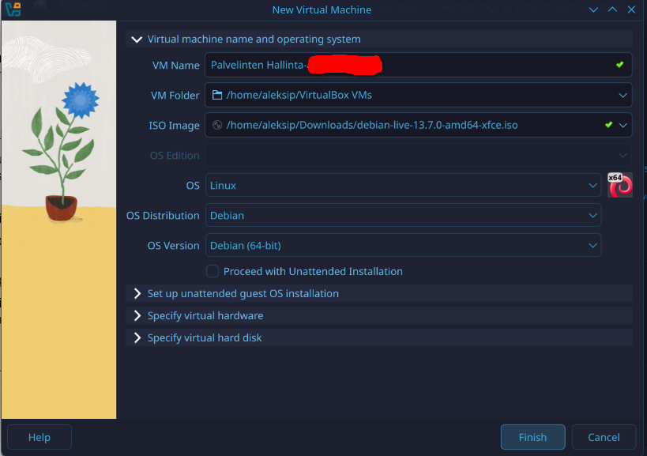
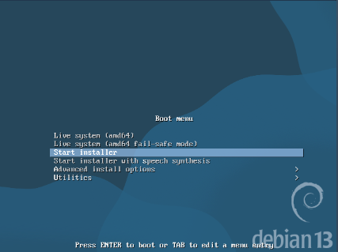
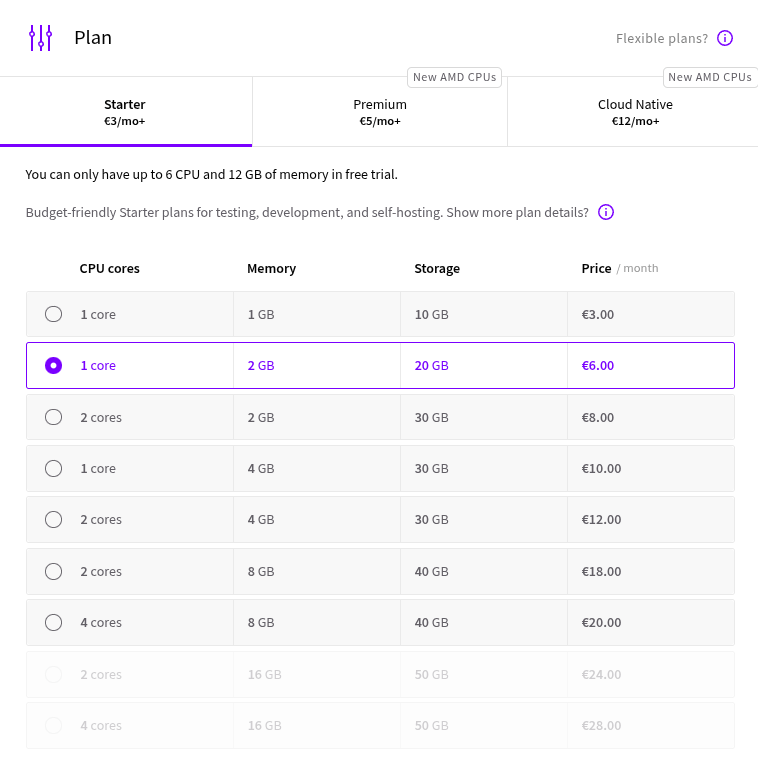
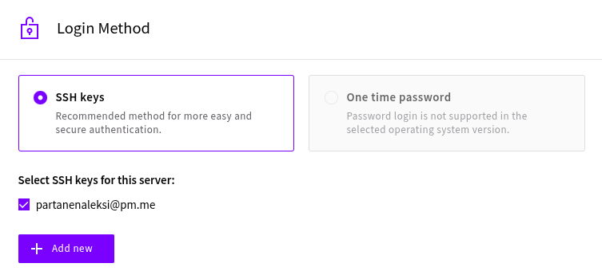
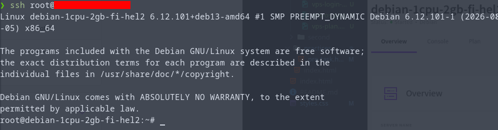
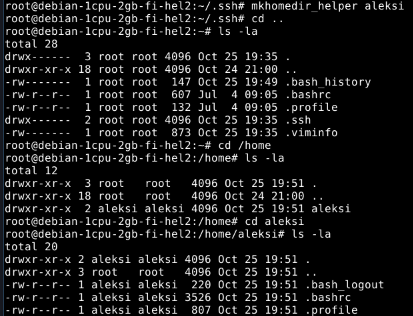
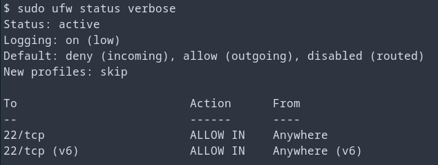

Host laitteisto
- Prosessori: AMD Ryzen 9 5900x 12-Core
- Keskusmuisti: 32GB DDR4
- Näytönohjain: NVIDIA GeForce RTX 3080
- OS: Linux 7.2.11-1-cachyos x86-64
Harjoitus 1: Hei Ansiblen maailma (Karvinen 2026a)
x) Tiivistelmä
Karvinen 2026: SSH public key (Karvinen 2026b)
- SSH on johtava menetelmä turvallisesti palvelimille kirjautumisessa
- SSH julkisen avaimen avulla sinun ei tarvitse kirjoittaa salasanaa koko ajan
- SSH yhteys saadaan helposti komennolla ssh [käyttäjänimi]@[host osoite], esimerkiksi aleksi@localhost
- SSH avaimet generoidaan komennolla ssh-keygen
- Julkisen SSH avaimen voi kopioida komennolla ssh-copy-id [host osoite], esimerkiksi ssh-copy-id localhost
- Oma pohdinta: Mitkä ovat SSH heikkoudet?
Karvinen 2026: Hello Ansible (Karvinen 2026c)
- Infrastructure-as-code, IaaS
- Hallitsee montaa eri laitetta helposti
- Ansible tarvitsee SSHn sekä Pythonin client/slave koneella. Ansible tarvitaan vain host/master koneella
- Ansible asennetaan komennolla sudo apt-get install ansible
- Ansible kansio pitää tehdä käyttäjän juureen/koti kansioon, jonne tehdään ansible konfiguraatio tiedostot
- hosts.ini tiedostossa on hostit, joita ansiblella halutaan kontrolloida. Hostit voidaan ryhmitellä kategorioittain, esim web ja db
- Helppo testi komento on ansible all -a 'uptime' -i hosts.ini
- Python versio voidaan pakottaa tiettyyn versioon, jolloin Ansible lopettaa varoituksen siitä, komennolla [all:vars] ansible_python_interpreter=/usr/bin/python3 hosts.ini tiedoston alimpana
- Myös -i hosts.ini komento voidaan lopettaa, kun lisätään komento [defaults] \n inventory = hosts.ini tiedostoon ansible.cfg
- Komento display_args_to_stdout = true defaults kohdan alla tulostaa mitä ansible playbook tekee
- Tietokoneiden roolit määrätään tiedostossa site.yml
- Roolit määritellään roles/[roolin nimi]/tasks/main.yml tiedostossa. Voidaan esimerkiksi kopioida tiedosto lisäämällä main.yml tiedostoon - copy: \n dest: /tmp/hello-ansible \n content: "See you at TeroKarvinen.com!\n"
- Oma pohdinta: Ansiblen heikkoudet?
a) Paikallista
Asennetaan Debian 13 paikalliselle koneelle virtuaalikoneeksi. Tein tämän jo h0 kohdassa edellisessä tehtävässä (Partanen 2026), josta sen voi käydä katsomassa. TLDR; Asensin Debian 13 Oraclen VirtualBoxiin.


Virtuaalikone saatiin tehtyä. Nyt onkin sitten vuorossa Debianin asennus virtuaalikoneelle. Aloitan asennuksen valitsemalla Start installer. Asennuksen aikana valitsin kieleksi English, lokaatioksi Finland ja koska en löytänyt Suomea paikallisasennuksista, valitsin paikallisasetukseksi United Kingdom. Näppäimistöksi valitsin Finnish. Asetin root-käyttäjän salasanan sekä tein aleksi käyttäjän. Kovalevyt asensin oletus valinnoilla. GRUB loaderin asensin ainoalle kovalevylle.

Asennus onnistui ja Debian toimii normaalisti. Lisäsin aleksi käyttäjän sudoers ryhmään. Päivitin Debianin komennolla sudo apt-get update. Latasin myös tree, ssh ja vim, jotta työskentely helpottuu tulevaisuudessa. Asensin myös Guest Additionit (Karvinen 2021), että kopiointi host koneen ja virtuaalikoneen välillä onnistuu, ja että virtuaalikoneen työpöydän resoluutio on suurempi.

b) VPS
Vuokrataan virtuaalinen yksityispalvelin. Aion käyttää UpCloudia tällä kertaa, koska Linux palvelimet kurssilla käytin Linode palvelua.
Aloitetaan tekemällä tunnukset Upcloud palveluun. Se onnistui helposti ja pankkikortti piti liittää tiliin. Sain 500 euroa käyttöön ensimmäiseksi kuukaudeksi jotta pääsen kokeilemaan asioita. Haluan kuitenkin ottaa käyttöön vain sellaisen VPS palvelun, joka ei ole hirveän kallis ja riittää kurssin käyttötarpeeseen. Päätin valita Upcloudin 1cpu/2GB ram/20GB version, joka maksaa 6e kuukaudessa. Todennäköisesti 3e versiokin olisi riittänyt ja mietin myös premium puolen 5e/kk versiota.

Käyttöjärjestelmäksi valitsin Debian 13 version, jota käytetään kurssilla.

Sisäänkirjautumis metodiksi valitsin SSH avaimella kirjautumisen ja lisäsinkin host koneen julkisen avaimen palvelimelle palvelimen teon yhteydessä. Myöhemmin lisäsin vielä virtuaalikoneen SSH avaimen myös Upcloudin VPS palvelimelle.


Tässä näkyy lopputulos kun palvelin on päällä ja yhteys saatu host koneelta siihen.


c) Alkutoimet
Tehdään sudo käyttäjä virtuaali palvelimelle. Teen nämä asiat ottamalla yhteyttä omalla koneella olevaltani virtuaalikoneelta. Tein aleksi käyttäjän root käyttäjällä virtuaali palvelimelle.

Jouduin tekemään kotihakemiston aleksi käyttäjälle myöhemmin, koska käyttäjää luodessa käyttänyt -d flagia.

Kopioin vielä ssh avaimet root käyttäjältä aleksi käyttäjälle, jotta voin jatkossa ottaa yhteyden myös aleksi käyttäjälle koneiltani. Tiedoston omistajaksi piti vielä muokata chmod komennolla aleksi käyttäjä. Tämän jälkeen ssh yhteys toimii myös aleksi käyttäjälle.

Päivitetään tässä vaiheessa ohjelmat ja asennetaan palomuuri (ufw). Palomuuriin tehdään reikä ssh:lle porttiin 22, jonka jälkeen laitetaan palomuuri päälle. Aiemmasta kokemuksesta muistan ettei palomuuria kannata laittaa päälle ennenkuin portti 22 on aukaistu.


d) Weppipalvelin
Asennetaan Nginx. Se onnistuukin helposti komennolla sudo apt-get install nginx. Sen jälkeen voidaankin varkistaa nginx tila komennolla sudo systemctl status nginx. Nginx taisikin olla jo asentamisen jälkeen automaattisesti päällä eikä start komentoa olisi tarvinnut antaa.

Nyt voimme myös testata näkyykö nginx oletus webbisivu osoitteessa http://localhost:80, ja näkyyhän se.

Lähteet
- Karvinen, Tero 2026a. h1 Hei Ansiblen maailma. Luettavissa: https://terokarvinen.com/palvelinten-hallinta/#h1-hei-ansiblen-maailma. Luettu: 28.10.2026
- Karvinen, Tero 2026b. SSH public key - Login without password. Luettavissa: https://terokarvinen.com/ssh-public-key-login-without-password/. Luettu: 28.10.2026
- Karvinen, Tero 2026c. Hello Ansible. Luettavissa: https://terokarvinen.com/hello-ansible/. Luettu: 28.10.2026
- Partanen, Aleksi 2026. Harjoitus 0: Oikeasti netissä. a) Paikallista. Luettavissa: https://partanennn.github.io/server-management/practices/pre-task.html#paikallista. Luettu: 28.10.2026
Tehtävänanto
- x) Lue ja tiivistä. (Tässä x-alakohdassa ei tarvitse tehdä testejä tietokoneella, vain lukeminen tai kuunteleminen ja tiivistelmä riittää. Tiivistämiseen riittää muutama ranskalainen viiva. Ei siis vaadita pitkää eikä essee-muotoista tiivistelmää. Lisää kuhunkin jokin oma kysymys tai huomio. Paljon komentoja sisältävistä dokumenteista kannattaa nostaa mukaan keskeiset komennot ja valinnat. Sisältöä, ei vain metatekstiä tai kuvailua.) Niemi 2025: H4 Tehtävät Partanen 2025: Harjoitus 5: Nimekäs: a) Nimi (Vain a-kohta.)
- a) Paikallista. Asenna Debian 13 paikallisesti virtuaalikoneeseen. Voit käyttää esimerkiksi VirtualBoxia. (Tätä käytetään myös tuntiharjoituksiin.)
- b) VPS. Vuokraa virtuaalinen yksityispalvelin.
- c) Alkutoimet. Tee virtuaalipalvelimellesi sudo-käyttäjä omalla nimellä (ei root). Asenna tulimuuri - ensin reikä ssh:lle. Päivitä kaikki ohjelmat ja boottaa tarvittaessa.
- d) Weppipalvelin. Asenna koneellesi weppipalvelin, kuten Apache tai Nginx.
- e) Vapaaehtoinen: Nimi. Aseta domain-nimi osoittamaan palvelimesi IP-osoitteeseen. (Tämä tehtävä saattaa myöhemmin tulla varsinaiseksi tehtäväksi)